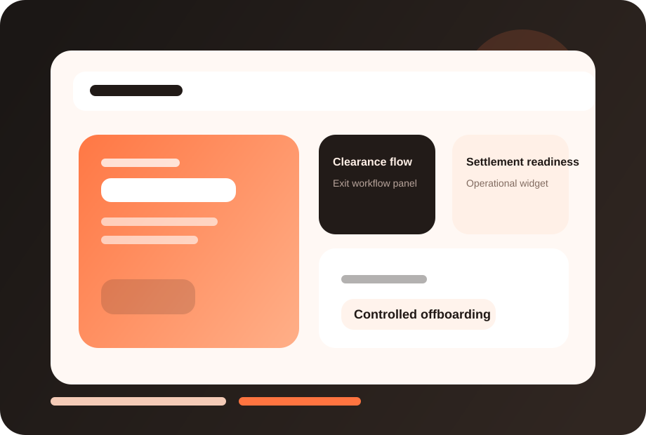

Operational control
Bring Exit & Full and Final into a more disciplined workflow with fewer blind spots and less manual chasing.
FuzionHR helps businesses manage resignations, approvals, handovers, asset returns and settlement workflows with more control and less last-minute confusion.

This page now has a dedicated visual treatment, stronger readability, and screenshot-ready product areas so you can drop in actual FuzionHR UI captures later.
Clearer module identity and stronger visual recognition.
Dedicated screenshot frames for real product views.
Structure remains intact while the design feels richer.
Bring Exit & Full and Final into a more disciplined workflow with fewer blind spots and less manual chasing.
Give HR, managers and leadership a clearer view of what is pending, approved or at risk.
Standardize this process before the organization becomes harder to manage across teams and locations.
These screenshot frames are placeholders for your actual product UI. Once you share real captures, we can place them here with polished annotations.
Replace this frame with your real product screenshot to show the live FuzionHR UI.
Use this area for dashboards, approvals, reports or employee-facing views.